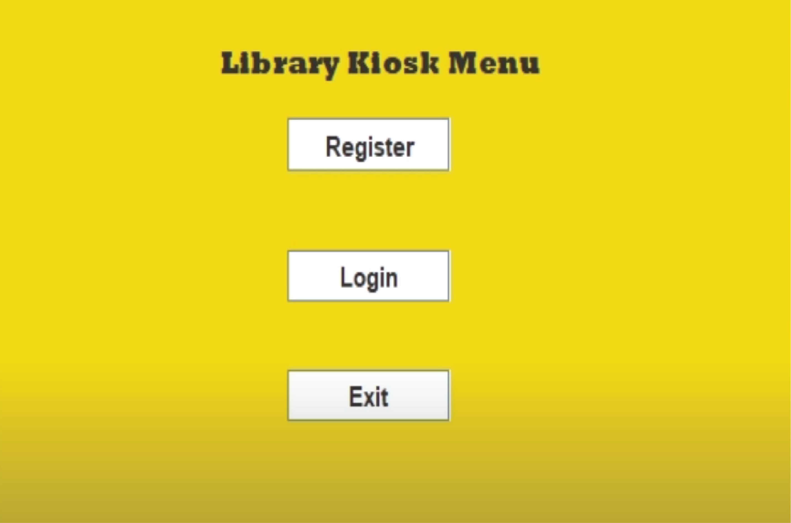
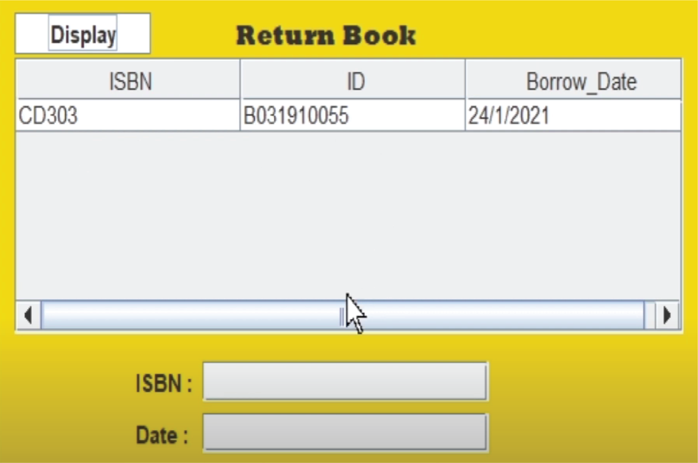

A simple book borrowing system.
This Kiosk Library is an automated version of manual Library Management System. The aim of the project is to provide flexibility to adapt to new and changing requirements. This system is to allow the student to create, manage and find out the student details and also allow student to search, borrow book or booking a study room. However, this system is very limited since this is the first system that I have developed when I was learning Java under Object Oriented Programming subject.
Above is the interface that will be prompted out to user when the user want to borrow book from the system. In order to borrow a book, user need to insert book's ISBN number and date of borrow.
The process of returning the borrowed book is not different from borrowing one. User just need to enter the ISBN number of the borrowed book and date of return.